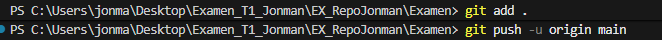

Documentación
Clonar un repositorio
Primero crearemos un directorio en este caso UD01_exam_IAW, donde le daremos iniciar con git init.

Despues con git clone <url>, podemos clonar el repositorio con el https, dado por la profesora.

Con esto ya tendremos copiado el repositorio, podemos hacer un dir para ver los lichero que tiene o un git branch -a para ver que contiene el repositorio clonado.

Podemos crear una rama con checkout -b Jonman.

Creación de Repositorio
Crearemos un repositorio en nuestro GitHub en New.

Le daremos un nombre sin añadir el Readme.md.

Ahora en nuestra carpeta local llamada EX_Repo_Jonman iniciaremos con un git init.

En nuestro GitHub nos dara un https que usaremos para copiar.

Luego git clone <url>.

MKdocs
En el repositorio que estamos instalaremos mkdocks.

Luego la apariencia.

Luego un nuevo proyecto.

Entraremos a Examen donde haremos.

Luego podemos añadir ficheros o editarlos, despues git add. git commit, git branch -M main y git remote add origin url. subiremos los cambios y git push -u origin main,

Y para dar inicio a la pagina.